<title>Dnes – pole na dlaždicu</title>
<meta name="claude:viewport-fit-sides" content="cover" />
<style>
    /* Návrh 27. 11. 2026: polia karty Dnes, ktoré sú teraz po dvoch na jednej dlaždici, každé na vlastnej dlaždici.
       Obrázky sú snímky skutočnej appky (fixtures, Dvorany 5. 9. 2026) pri 360 px, dlaždice rozdelil dočasný skript
       test/screenshots/_navrh-polia.js úpravou DOM a CSS - v kóde appky sa nič nezmenilo.
       Rozloženie: stĺpec textu, pod každou možnosťou tri telefóny (ráno, cez deň, večer) a celý pás dlaždíc. */
    :root {
        color-scheme: dark;
        --bg: #0b1226;
        --panel: #141d38;
        --fg: #f2f5fb;
        --dim: #a9b4cc;
        --sun: #ffd166;
        --plus: #8fe36f;
        --minus: #ff9b8a;
        --line: rgba(255, 255, 255, 0.12);
        --font: 'Segoe UI', -apple-system, Roboto, Arial, sans-serif;
    }
    * {
        box-sizing: border-box;
    }
    body {
        background: var(--bg);
        color: var(--fg);
        font-family: var(--font);
        font-size: 15px;
        line-height: 1.5;
    }
    main {
        max-width: 1240px;
        margin: 0 auto;
        padding-block: 32px 80px;
        padding-left: max(16px, env(safe-area-inset-left, 0px));
        padding-right: max(16px, env(safe-area-inset-right, 0px));
        display: grid;
        gap: 44px;
    }
    h1,
    h2,
    h3 {
        margin: 0;
        line-height: 1.15;
        text-wrap: balance;
    }
    h1 {
        font-size: clamp(26px, 5vw, 36px);
        font-weight: 900;
    }
    h2 {
        font-size: 22px;
        font-weight: 800;
    }
    h2 b {
        color: var(--sun);
    }
    h3 {
        font-size: 12px;
        font-weight: 800;
        letter-spacing: 0.08em;
        text-transform: uppercase;
        color: var(--dim);
    }
    p,
    ul {
        margin: 0;
        max-width: 72ch;
    }
    ul {
        padding: 0;
        list-style: none;
        display: grid;
        gap: 6px;
    }
    code {
        font-size: 0.875em;
    }
    .dim {
        color: var(--dim);
    }
    .plus,
    .minus,
    .pozn {
        padding-left: 1.2em;
        text-indent: -1.2em;
    }
    .plus::before,
    .minus::before,
    .pozn::before {
        font-weight: 800;
        display: inline-block;
        width: 1.2em;
        text-indent: 0;
    }
    .plus::before {
        content: '+';
        color: var(--plus);
    }
    .minus::before {
        content: '−';
        color: var(--minus);
    }
    .pozn::before {
        content: '→';
        color: var(--sun);
    }
    section {
        display: grid;
        gap: 16px;
    }
    .telefony {
        display: flex;
        gap: 16px;
        overflow-x: auto;
        padding-bottom: 6px;
    }
    figure {
        margin: 0;
        flex: none;
        display: grid;
        gap: 6px;
    }
    figure img {
        width: 270px;
        max-width: none;
        border-radius: 18px;
        border: 1px solid var(--line);
        display: block;
    }
    figcaption {
        font-size: 13px;
        color: var(--dim);
    }
    .pas {
        display: flex;
        gap: 5px;
        overflow-x: auto;
        padding: 12px;
        border-radius: 16px;
        background: linear-gradient(180deg, #3d78c4, #5b8fc9);
    }
    .pas img {
        height: 148px;
        width: auto;
        max-width: none;
        flex: none;
        display: block;
    }
    .odpor {
        padding: 16px 18px;
        background: var(--panel);
        border-radius: 14px;
        display: grid;
        gap: 10px;
    }
    .tabw {
        overflow-x: auto;
    }
    table {
        border-collapse: collapse;
        font-size: 14px;
    }
    th,
    td {
        text-align: left;
        padding: 6px 14px 6px 0;
        border-bottom: 1px solid var(--line);
        vertical-align: top;
    }
    th {
        color: var(--dim);
        font-weight: 700;
    }
</style>

<main>
    <header style="display: grid; gap: 10px">
        <h1>Dnes – každé pole na vlastnej dlaždici</h1>
        <p><b style="color: var(--sun)">Zvolené B</b> (27. 11. 2026).</p>
        <p class="dim">
            Dnes sú polia v páse po dvoch (Dnes | Veľké veci, Zo strechy | Ako keby, Predpoveď | Oblačnosť, Najviac slnka | Kedy lepšie;
            večer Dnešok | Zajtra). Tri spôsoby, ako ich rozdeliť. Všetky obrázky sú snímky skutočnej appky pri šírke 360 px (ukážkové dáta
            Dvorany, 5. 9. 2026 o 8:30, 13:00 a 20:30). Dlaždice som rozdelil dočasným skriptom v prehliadači, kód appky som nemenil.
        </p>
    </header>

    <section>
        <h2>Teraz – dvojice</h2>
        <div class="telefony">
            <figure>
                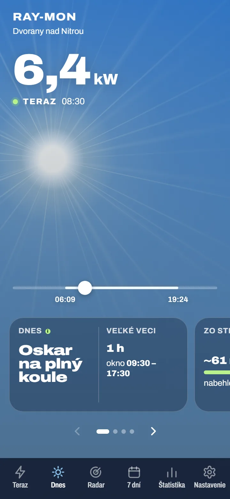
                <figcaption>ráno 8:30</figcaption>
            </figure>
            <figure>
                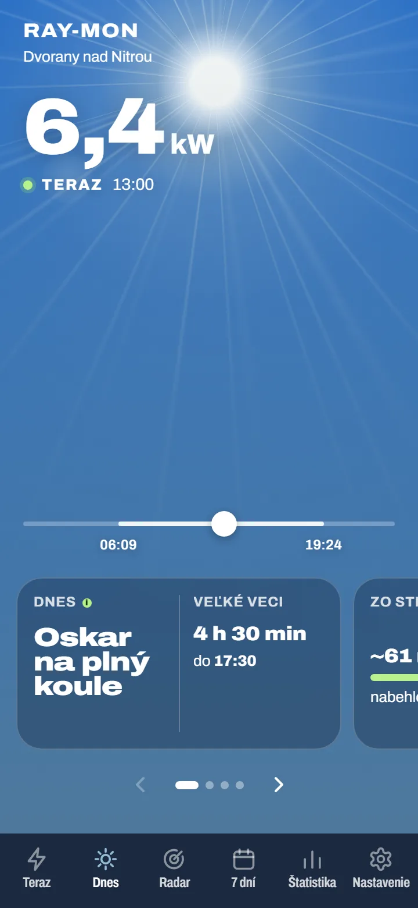
                <figcaption>cez deň 13:00</figcaption>
            </figure>
            <figure>
                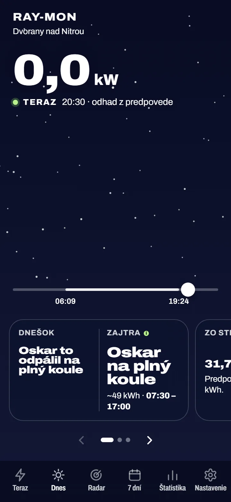
                <figcaption>večer 20:30</figcaption>
            </figure>
        </div>
        <h3>Celý pás cez deň (4 dlaždice)</h3>
        <div class="pas">
            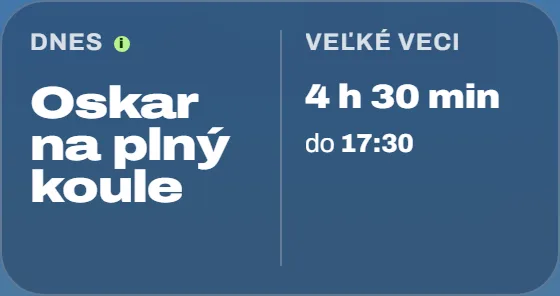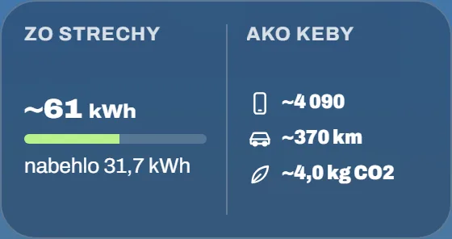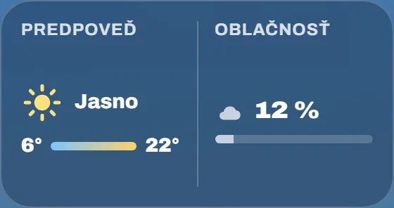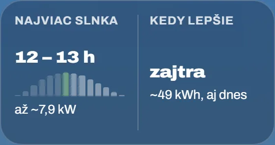
        </div>
    </section>

    <section>
        <h2><b>A</b> – pole na celú dlaždicu</h2>
        <p>Dlaždica má tú istú šírku ako dnes (susedná vykukuje sprava), no nesie len jedno pole.</p>
        <div class="telefony">
            <figure>
                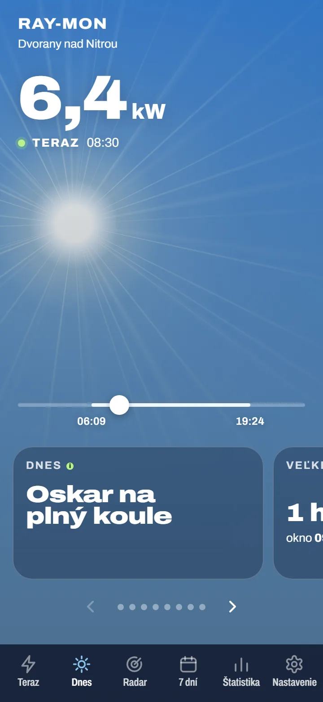
                <figcaption>ráno 8:30</figcaption>
            </figure>
            <figure>
                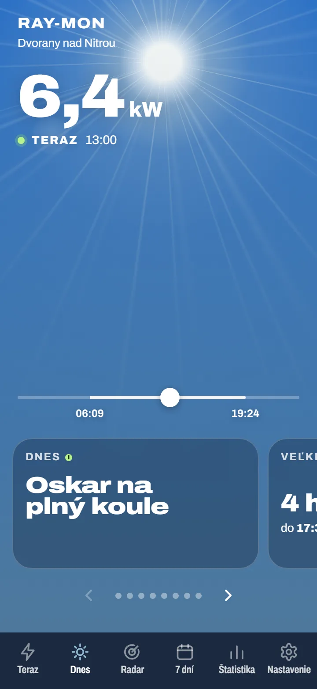
                <figcaption>cez deň 13:00</figcaption>
            </figure>
            <figure>
                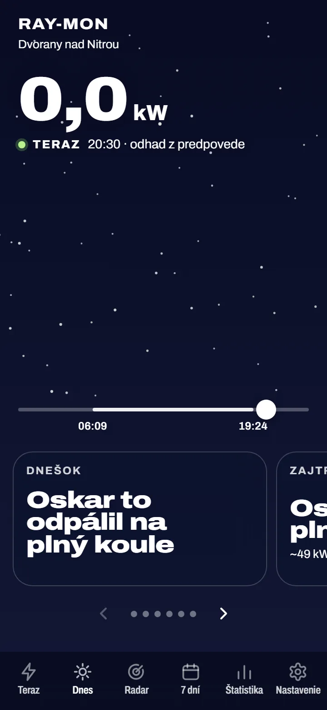
                <figcaption>večer 20:30</figcaption>
            </figure>
        </div>
        <h3>Celý pás cez deň (8 dlaždíc)</h3>
        <div class="pas">
            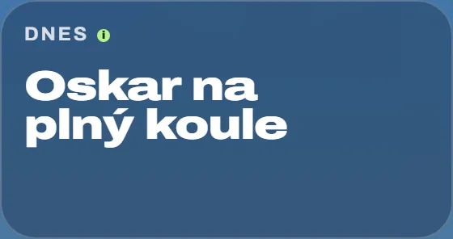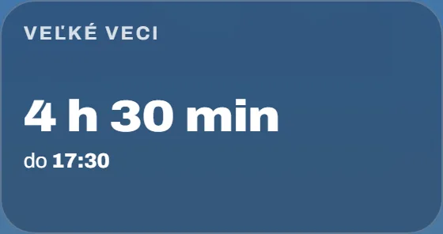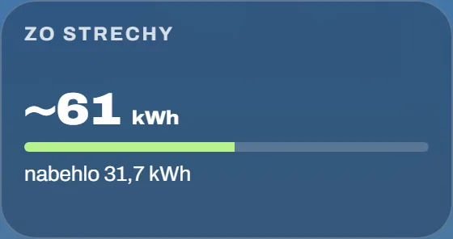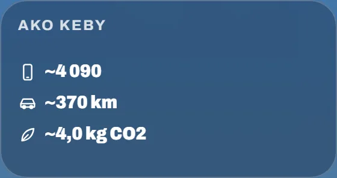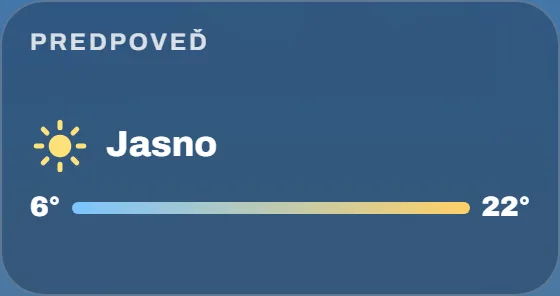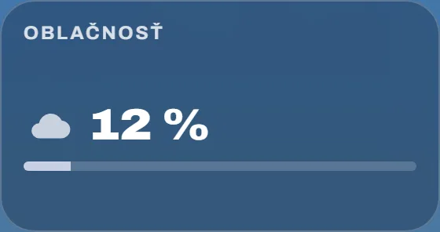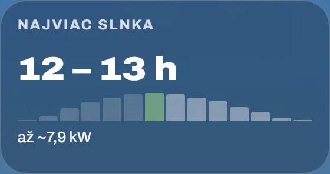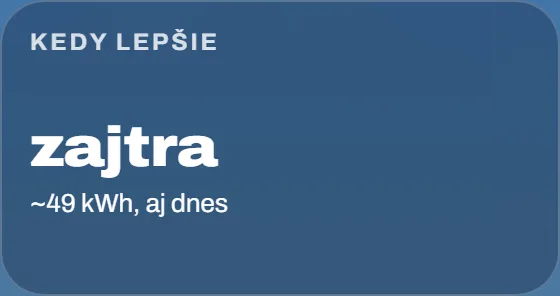
        </div>
        <ul>
            <li class="plus">Každé pole má veľa miesta: veľké slovo, čísla aj texty bez zalamovania, nadpisy bez riedenia písma.</li>
            <li class="plus">Najjednoduchšie v kóde: zrušiť <code>DVOJICE</code>, deliacu čiaru a štýly polovíc.</li>
            <li class="minus">Dvakrát viac posúvania: 8 dlaždíc a 8 bodiek, na obrazovke je naraz len jedno pole.</li>
            <li class="minus">Krátke polia (Veľké veci, Oblačnosť, Ako keby) nechajú väčšinu dlaždice prázdnu.</li>
        </ul>
    </section>

    <section>
        <h2><b>B</b> – polovičné dlaždice, dve naraz</h2>
        <p>
            Každé pole má vlastné sklo v šírke dnešnej polovice. Na obrazovke sú dve celé a tretia vykukuje, pás zastane na každej dlaždici.
        </p>
        <div class="telefony">
            <figure>
                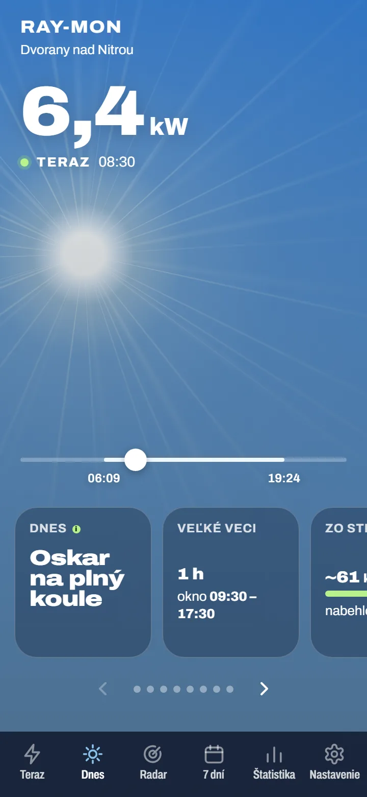
                <figcaption>ráno 8:30</figcaption>
            </figure>
            <figure>
                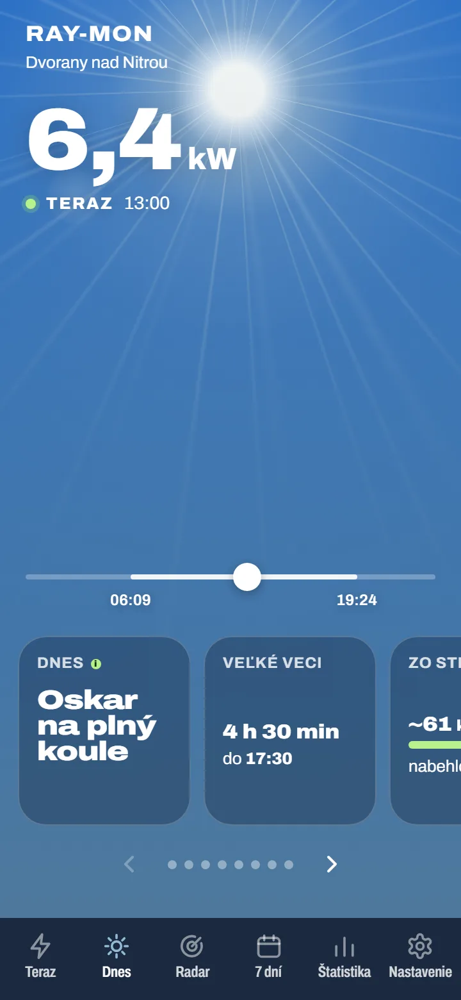
                <figcaption>cez deň 13:00</figcaption>
            </figure>
            <figure>
                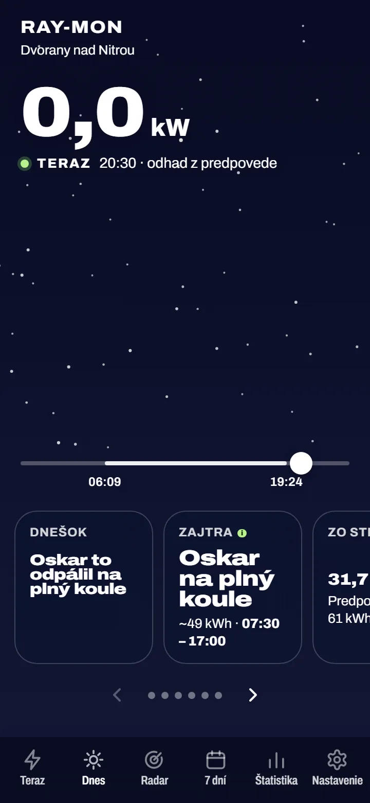
                <figcaption>večer 20:30</figcaption>
            </figure>
        </div>
        <h3>Celý pás cez deň (8 dlaždíc)</h3>
        <div class="pas">
            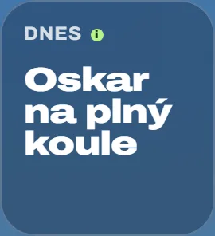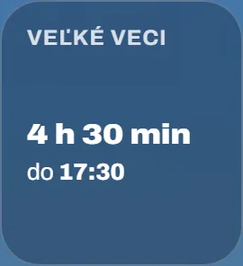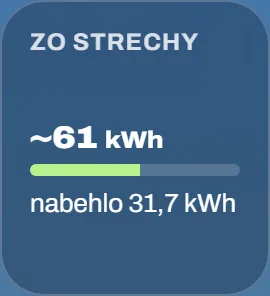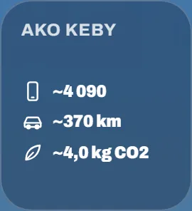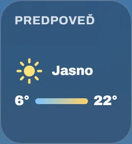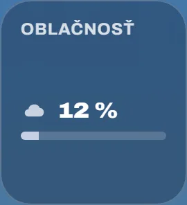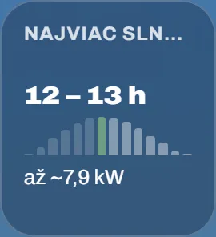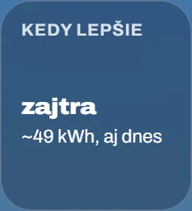
        </div>
        <ul>
            <li class="plus">Hustota ako dnes, dve polia naraz. Každé pole je samostatná vec, čo sedí k bublinám a panelom polí.</li>
            <li class="plus">Poradie si človek posúva po jednom poli, nie po dvojici.</li>
            <li class="minus">
                Polia sú o pár px užšie ako dnešné polovice (každé má vlastný okraj skla a medzeru), dlhší text sa zalomí skôr („Predpoveď
                bola 61 kWh.“ na dva riadky).
            </li>
            <li class="minus">Dvojice podľa významu zmiznú: vedľa seba stojí to, čo práve vyjde posunom, napr. Ako keby a Predpoveď.</li>
            <li class="minus">8 bodiek namiesto 4.</li>
        </ul>
    </section>

    <section>
        <h2><b>C</b> – mriežka po dvoch bez pásu</h2>
        <p>Pás sa nelistuje, polia stoja v mriežke po dvoch pod posuvníkom a stránka sa posúva dolu. Šípky ani bodky nie sú.</p>
        <div class="telefony">
            <figure>
                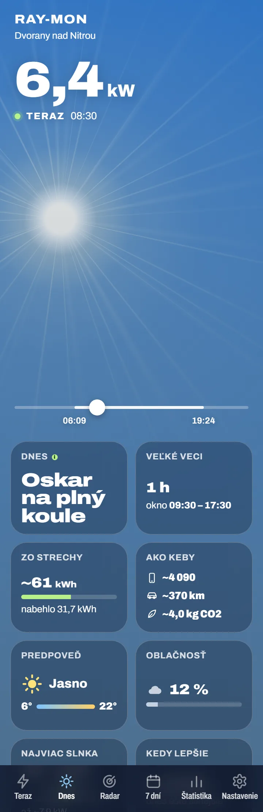
                <figcaption>ráno 8:30</figcaption>
            </figure>
            <figure>
                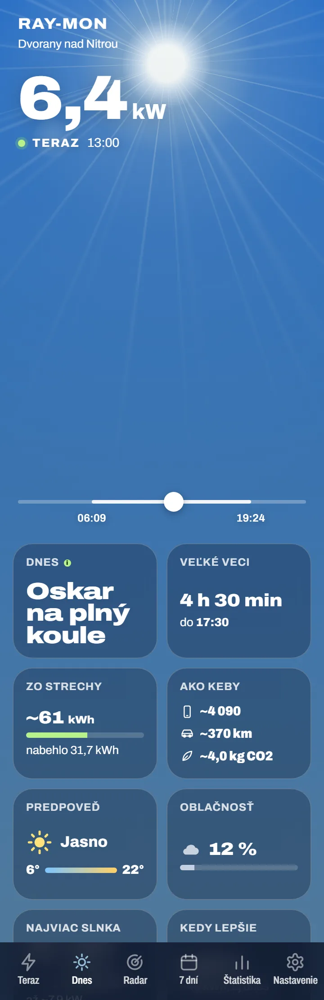
                <figcaption>cez deň 13:00</figcaption>
            </figure>
            <figure>
                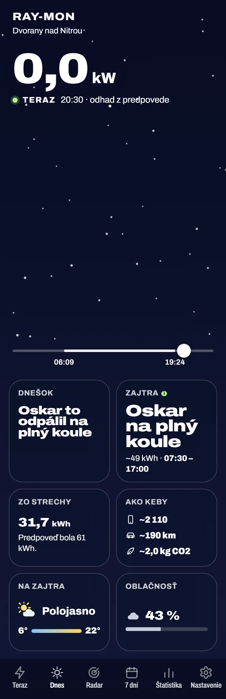
                <figcaption>večer 20:30</figcaption>
            </figure>
        </div>
        <p class="dim">
            Pozor: snímky C sú z vysokého okna (360 × 1110 px), aby bolo vidno všetky polia. Na S22 (okno asi 360 × 780 px) je pod
            posuvníkom vidno len prvý rad a ďalšie sú až po posunutí stránky.
        </p>
        <ul>
            <li class="plus">Nič nie je skryté vedľa, všetky polia sú pod sebou, žiadne vodorovné posúvanie.</li>
            <li class="plus">Polia majú šírku ako v B, ale stoja vždy v tom istom poradí a na tom istom mieste.</li>
            <li class="minus">
                Rozbije rozloženie „Dnes podľa výšky obrazovky“ (Z2): pás už nevyplní zvyšok obrazovky, stránka sa posúva a obloha s
                posuvníkom odíde hore.
            </li>
            <li class="minus">Pod mriežkou končí obloha (sivá plocha na snímke cez deň), treba doriešiť pozadie.</li>
            <li class="minus">Najväčšia zmena: CSS, e2e testy pásu (bodky, šípky, ťah) a návrh Z2 by sa prerábali.</li>
        </ul>
    </section>

    <section>
        <h2>Porovnanie</h2>
        <div class="tabw">
            <table>
                <thead>
                    <tr>
                        <th></th>
                        <th>Teraz</th>
                        <th>A</th>
                        <th>B</th>
                        <th>C</th>
                    </tr>
                </thead>
                <tbody>
                    <tr>
                        <td>Dlaždíc cez deň / večer</td>
                        <td>4 / 3</td>
                        <td>8 / 6</td>
                        <td>8 / 6</td>
                        <td>8 / 6</td>
                    </tr>
                    <tr>
                        <td>Polí naraz na obrazovke</td>
                        <td>2</td>
                        <td>1</td>
                        <td>2</td>
                        <td>2 (ďalšie po posunutí)</td>
                    </tr>
                    <tr>
                        <td>Miesto pre pole</td>
                        <td>polovica</td>
                        <td>celá dlaždica</td>
                        <td>o kúsok menej ako polovica</td>
                        <td>o kúsok menej ako polovica</td>
                    </tr>
                    <tr>
                        <td>Dvojice podľa významu</td>
                        <td>áno</td>
                        <td>nie</td>
                        <td>nie</td>
                        <td>vedľa seba v mriežke</td>
                    </tr>
                    <tr>
                        <td>Zásah do kódu</td>
                        <td>–</td>
                        <td>malý</td>
                        <td>malý</td>
                        <td>veľký (rozloženie Z2)</td>
                    </tr>
                </tbody>
            </table>
        </div>
    </section>

    <section class="odpor">
        <h2>Odporúčam B</h2>
        <p>
            Zachová hustotu a výšku pásu, akú máš dnes, len každé pole dostane vlastné sklo a pás sa posúva po jednom. A je pohodlnejšie na
            čítanie, ale za cenu dvojnásobného listovania pri poliach, ktoré majú jedno číslo. C dáva zmysel, len keby si chcel opustiť pás
            úplne. Ak ti na dvojiciach podľa významu záleží viac než na samostatných dlaždiciach, najlepšie je nechať dnešný stav.
            Rozhoduješ ty.
        </p>
    </section>
</main>
